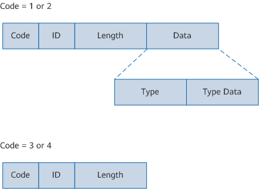
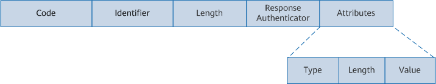

Field |
Bytes |
Description |
|---|---|---|
Code |
1 |
Type of an EAP data packet:
|
ID |
1 |
Used to match a Response packet with the corresponding Request packet. |
Length |
2 |
Length of an EAP data packet, including the Code, ID, Length, and Data fields. Bytes beyond the range of the Length field are treated as padding at the data link layer and ignored on reception. |
Data |
Zero or multiple bytes |
The format of the Data field is determined by the Code field.
|
Type Field Value |
Packet Type |
Description |
|---|---|---|
1 |
Identity |
Requests or returns the user name information entered by a user. |
2 |
Notification |
Transmits notification information about some events, such as password expiry and account lockout. Such notifications are optional. |
3 |
NAK |
Indicates negative acknowledgment and is used only in a Response packet. For example, if the access device uses an authentication method that is not supported by the client to initiate a request, the client can send a Response/NAK packet to notify the access device of the authentication methods supported by the client. |
4 |
MD5-Challenge |
Indicates that the authentication method is MD5-Challenge. |
5 |
OTP |
Indicates that the authentication method is One-Time Password (OTP). For example, during e-banking payment, the system sends a one-time password through an SMS message. |
6 |
GTC |
Indicates that the authentication method is Generic Token Card (GTC). A GTC is similar to an OTP except that a GTC usually corresponds to a real device. For example, many banks in China provide a dynamic token for users who apply for e-banking. This token is known as a GTC. |
13 |
EAP-TLS |
Indicates that the authentication method is EAP-Transport Layer Security (EAP-TLS). |
21 |
EAP-TTLS |
Indicates that the authentication method is EAP-Tunneled Transport Layer Security (EAP-TTLS). |
25 |
EAP-PEAP |
Indicates that the authentication method is EAP-Protected Extensible Authentication Protocol (EAP-PEAP). |
254 |
Expanded Types |
Indicates an expanded type, which can be customized by vendors. |
255 |
Experimental use |
Indicates a type for experimental use. |
EAPoL is a packet encapsulation format defined by the 802.1X protocol and is mainly used to transmit EAP packets over a LAN between the client and access device. The following figure shows the format of an EAPoL packet.
Field |
Bytes |
Description |
|---|---|---|
PAE Ethernet Type |
2 |
Protocol type. The value is fixed at 0x888E. |
Protocol Version |
1 |
Protocol version number supported by the EAPoL packet sender:
|
Type |
1 |
Type of an EAPoL packet:
The EAPoL-Start, EAPoL-Logoff, and EAPoL-Key packets are transmitted only between the client and access device. |
Length |
2 |
Data length, that is, the length of the Packet Body field, in bytes. The value 0 indicates that the Packet Body field does not exist. For the EAPoL-Start and EAPoL-Logoff packets, the value of the Length field is 0. |
Packet Body |
Variable |
Data content. This field exists when the Type field displays EAP-Packet or EAPOL-Key. Additionally, the maximum length of the field is limited by the data link layer protocol. |
In EAP relay scenarios, EAP packets are encapsulated into RADIUS packets in EAP over RADIUS (EAPoR) format. Therefore, two attributes are added to RADIUS packets: EAP-Message (EAP message) and Message-Authenticator (message authentication code), which are used to encapsulate EAP packets and authenticate and verify authentication packets to protect against spoofing of invalid packets, respectively. The following figure shows the format of an EAPoR packet.

Field |
Bytes |
Description |
|---|---|---|
Code |
1 |
Indicates the type of a RADIUS packet. |
Identifier |
1 |
Is used to match a Response packet with the corresponding Request packet, and to detect the Request packet retransmitted within a certain period. After the client sends a Request packet, the authentication server sends a Response packet with the same Identifier value as the Request packet. |
Length |
2 |
Indicates the length of a RADIUS packet. Bytes beyond the Length field must be treated as padding and ignored on reception. If the length of a received packet is less than the value of the Length field, the packet is discarded. |
Response Authenticator |
16 |
Is used to verify the Response packet sent by the RADIUS server and encrypt the user password. |
Attributes |
Variable length |
Indicates the packet content body, which carries authentication, authorization, and accounting information as well as providing configuration details of the Request and Response packets. The Attributes field may contain multiple attributes, each of which consists of Type, Length, and Value.
|